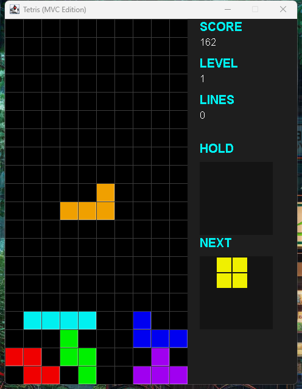

Tetris (MVC Edition)
Java (Swing) を用いて、MVC (Model-View-Controller) アーキテクチャに基づき実装したテトリスです。7-bagアルゴリズムやDAS、ホールド機能など、実際のテトリス実装に近い仕様を一通り盛り込みました。
Java (Swing) 製のデスクトップアプリのため、Web上での公開デモは用意していません。このページでは実際に起動してプレイした画面のスクリーンショットで内容を紹介します。手元で試したい場合は、GitHubリポジトリのTetris.jarをダウンロードしてダブルクリックするだけで、Javaがインストールされた環境ならすぐ起動できます。
概要
Model / View / Controller を明確に分離して実装したテトリスです。Modelは盤面の状態管理と衝突判定・行削除を担当し、Viewは描画のみ、Controllerがゲームループと入力処理を担当します。View（Swingコンポーネント）はModel/Controllerの実装を直接知らず、Observerパターンで通知を受け取るだけの設計にしています。
画面
プレイ画面
左側が盤面、右側にスコア・レベル・消去ライン数・ホールド・NEXTを表示します。ミノを積んでいくと自動的にレベルが上がり、落下速度も速くなります。

実際にプレイ中の盤面。右側にスコア・NEXTなどの情報を表示。
主な機能
7-bagアルゴリズム
7種類のテトリミノを1セットとしてシャッフルして出現させることで、特定のミノばかり出続ける偏りを防いでいます。
DAS (Delayed Auto Shift)
左右キーを押しっぱなしにすると、一定時間後から高速でリピート移動するようにしています。
簡易Wall Kick
壁際・床際で回転がそのまま入らない場合に、いくつかのオフセットを試して回転を成立させます。
ホールド機能
現在のテトリミノを保留して後で使う、一般的なテトリス実装と同様のホールド機能を実装しています。
操作方法
| キー | 動作 |
|---|---|
| ← / A | 左移動（押しっぱなしで加速：DAS） |
| → / D | 右移動（押しっぱなしで加速：DAS） |
| ↓ / S | ソフトドロップ |
| ↑ / W | 時計回り回転 |
| Z | 反時計回り回転 |
| Space | ハードドロップ（即着地） |
| P | 一時停止 / 再開 |
| C / Shift | ホールド（現在のミノを保留・入れ替え） |
今後の改善点
ゴーストピース（着地予測位置の表示）は未実装です。またWall Kickは正式なSRS(Super Rotation System)ではなく簡易実装のため、特定の回転パターンでは挙動が異なる場合があります。